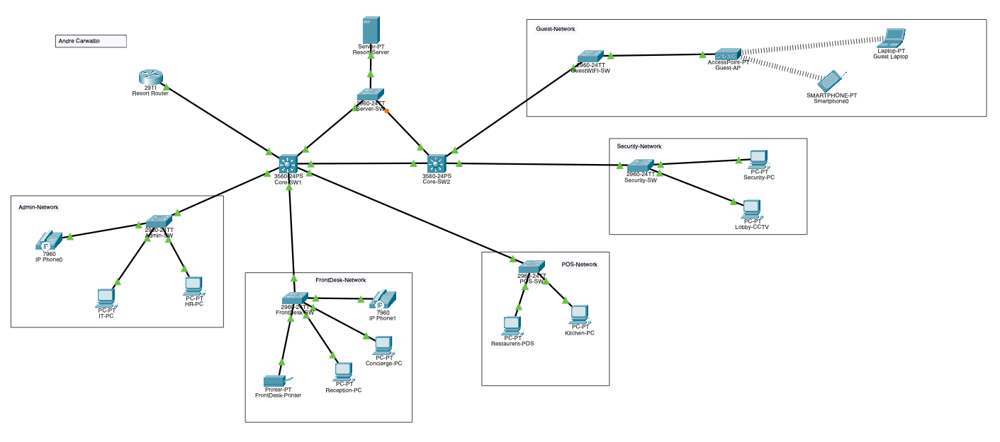

Resort Network Infrastructure Design & Configuration (Cisco Packet Tracer)
Designed and implemented a simulated resort network infrastructure using Cisco Packet Tracer to model a real-world hospitality IT environment. The project included configuring VLANs for Admin/IT, Front Desk, POS/Restaurant, Guest Wi-Fi, Security/CCTV, Servers, and Voice systems to separate traffic and improve network organization, security, and troubleshooting.
I upgraded the design from a basic single-core network into a more advanced architecture with dual multilayer core switches, inter-VLAN routing, DHCP relay, DNS services, guest Wi-Fi isolation using ACLs, network printer support, and Rapid PVST for redundant switching paths. I also troubleshot issues such as failed DHCP, incorrect trunk ports, VLAN misassignments, and access port configuration errors using structured Cisco show commands and ping testing.
Key Tools & Technologies:
- Cisco Packet Tracer
- VLANs & Inter-VLAN Routing
- DHCP, DNS & ACLs
- Network Troubleshooting